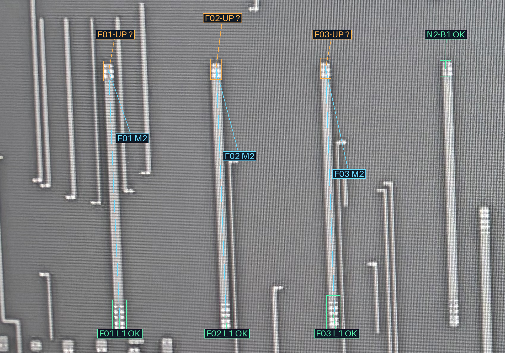
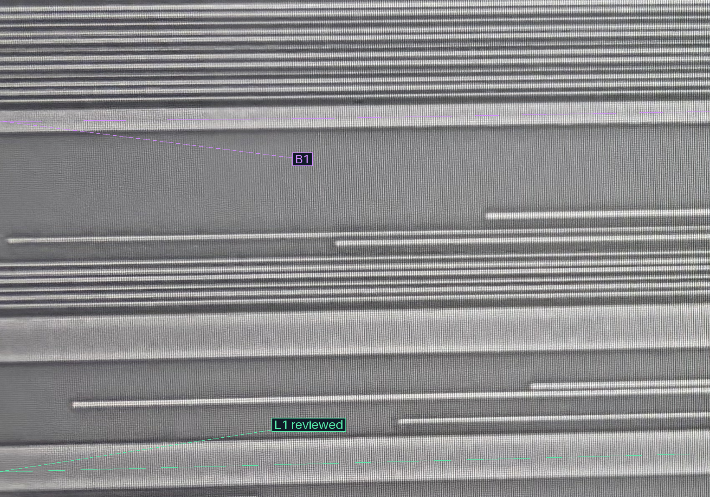
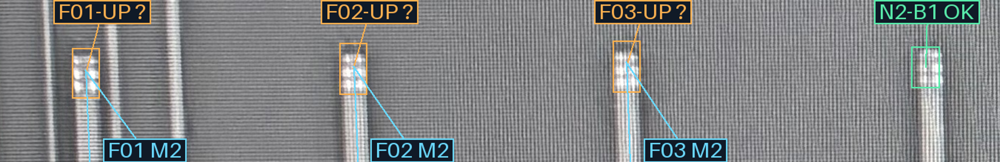
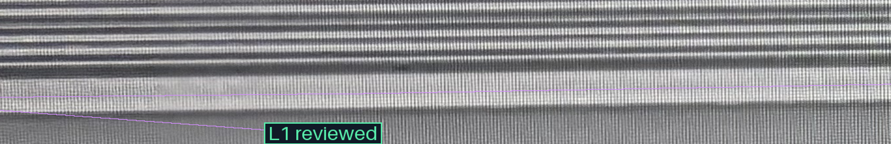

两条局部路径在已审关系上连通B1与L1，仍保持B1、L1各自金属对象ID；示意图没有借用被撤回的跨Via层配准。
| 接口 | M2稳定ID | 状态 |
|---|---|---|
| F01 | M2-L1-F01 | 已确认 → L1 |
| F02 | M2-L1-F02 | 已确认 → L1 |
| F03 | M2-L1-F03 | 已确认 → L1 |
| D1 | M2-N2-LEFT-RAIL | 已确认 → L1 |
| F04 | M2-J01 | 已确认 → L1 |
| F05 | M2-L1-F05 | 已确认 → L1 |
| F06 | M2-L1-F06 | 已确认 → L1 |
| F07 | M2-L1-F07 | 已确认 → L1 |
| F08 | M2-L1-F08 | 已确认 → L1 |
| F09 | M2-L1-F09 | 已确认 → L1 |
| F10 | M2-L1-F10 | 已确认 → L1 |
| F11 | M2-L1-F11 | 已确认 → L1 |
| F12 | M2-L1-F12 | 已确认 → L1 |
橙框F01-UP／F02-UP／F03-UP是本轮新增上端候选；绿色下端均已审接L1。蓝线沿各自M2本图示意追踪，右侧N2上端是已审参照。我的初判：三组上端V2均落在紫色B1宽M3上；需你裁决，不能由下端批准自动推出。
只需回复：“三组上端均接B1”，或按编号指出例外。
M2 · 打开完整原尺寸

M3 · 打开完整原尺寸

M2 · 打开完整原尺寸

M3 · 打开完整原尺寸

新上端裁决前AI观察 · 逐分支剩余前沿 · 评价 · 核验